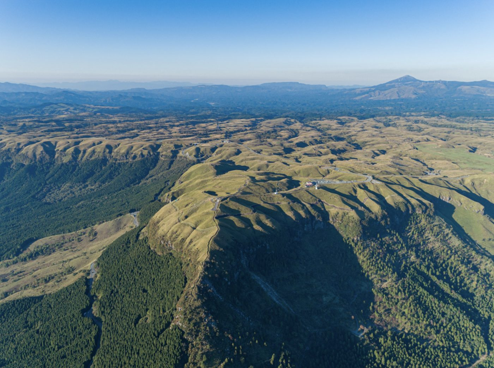
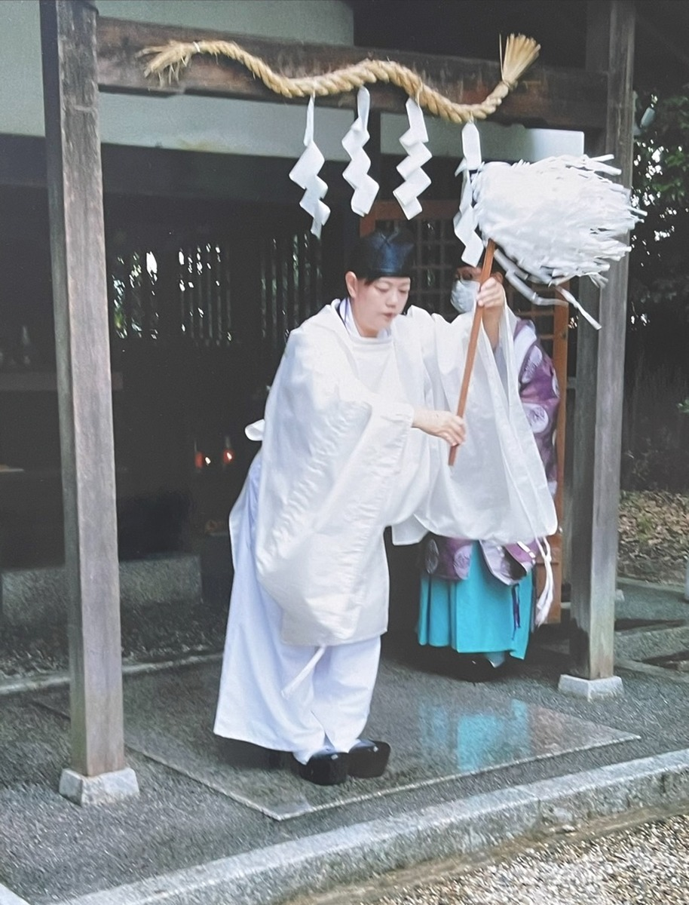
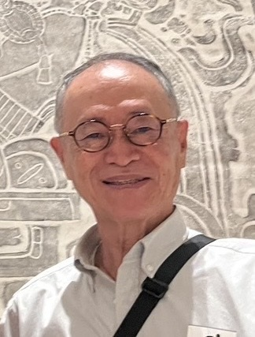
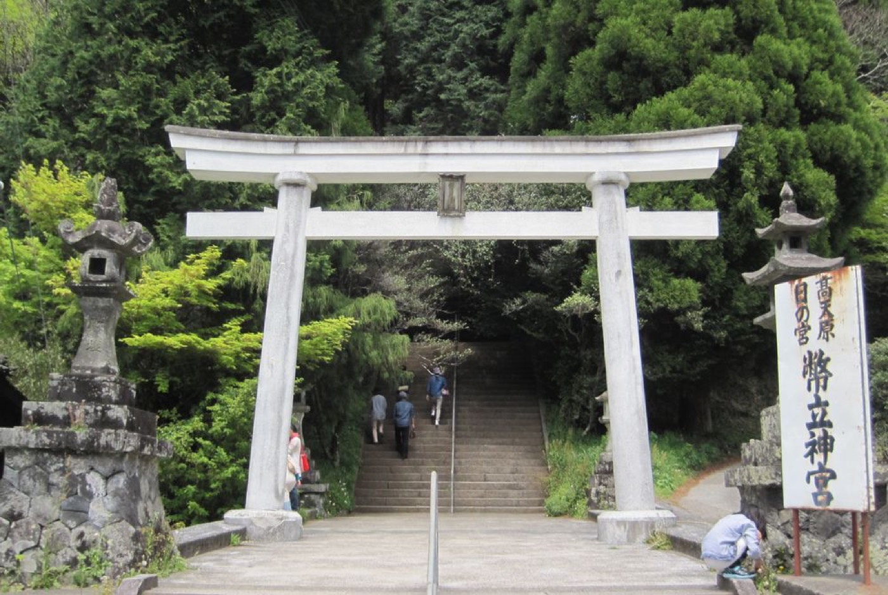
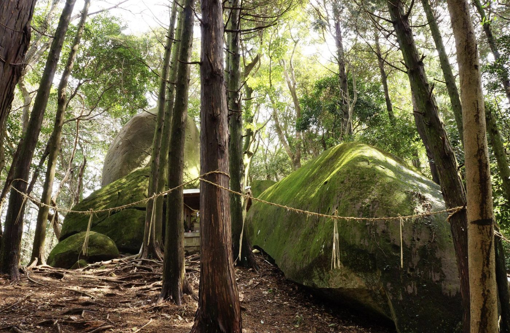
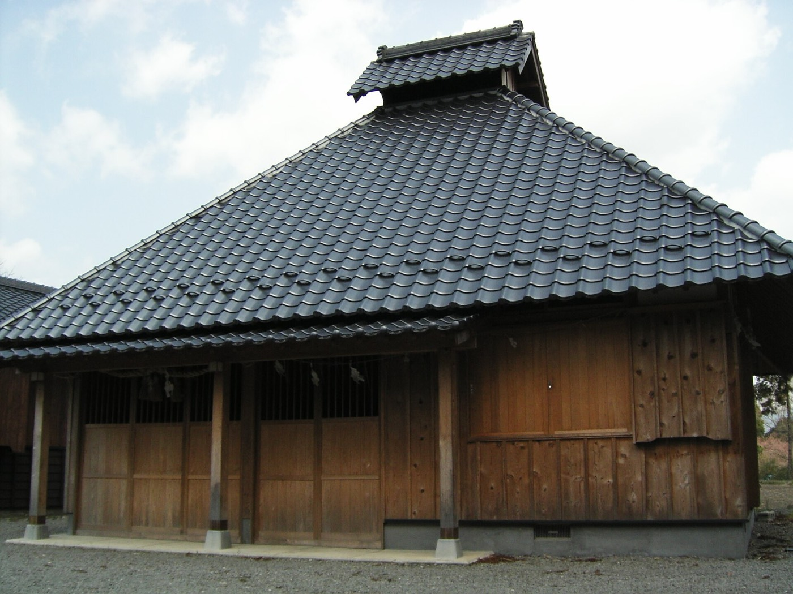
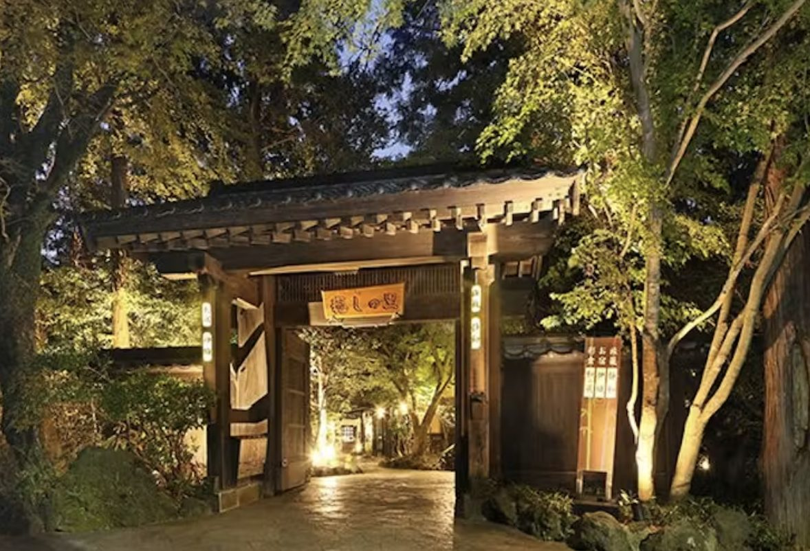
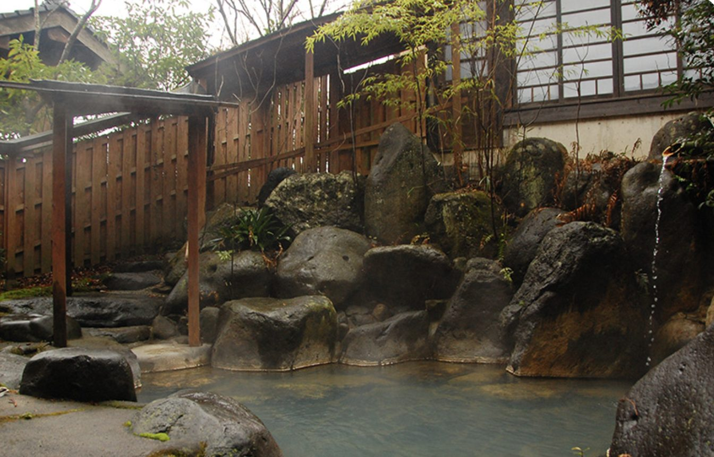

2026.12.3 THU − 12.5 SAT
鬼と呼ばれた人たちに、
名前を返す3日間
「鬼八には、
ちゃんと名前があった」
その言葉を聞いたときから、この旅は始まりました。
阿蘇と高千穂に、鬼八（きはち）と呼ばれた者の伝説が残っています。神に討たれた鬼。何度斬られても蘇るため、首・胴・手足の3つに分けて埋められた者。そう語り継がれてきました。
けれど、その人たちは本当に鬼だったのでしょうか。
日本の古い歴史は、磐座（いわくら）信仰と自然崇拝から始まっています。土地を守っていた元々の方々がおられ、その中に鬼八の一族がいた。そこへ新しい勢力が入ってきて、押さえつけられた。その方々がいたからこそ、今の日本の土台があります。
勝った側が語れば、負けた側は鬼になります。ならば、鬼と呼ばれた側から見れば、まったく別の物語が立ち上がるはずです。
この3日間は、その名前を取り戻しに行く旅です。そして、鬼八の一族が祈りを捧げていた巨石に、この手で触れに行く旅でもあります。
阿蘇と高千穂、2つの土地に伝わっています。
健磐龍命（たけいわたつのみこと）の弓の稽古で、的（まと）まで矢を拾いに走る役目を負っていた鬼八。99本まで拾い、100本目で力尽き、足で蹴り返した矢が命の腿に刺さりました。
追われ、身を斬られてもなお再生する力を持っていたといいます。その霊は空に昇って霜を降らせ、里の作物を枯らしました。
人々は霜神社に鬼八を祀り、少女が59日間、火を絶やさずに焚き続けて慰める神事を始めました。その火焚き神事は、今も続いています。
高千穂に戻った三毛入野命（みけいりののみこと）が、鵜目姫（うのめひめ）をさらった鬼八を討ちました。
けれど、何度斬っても蘇ってしまう。そこで身体を首・胴・手足の3つに分け、それぞれ離れた場所に埋めたと伝わります。首塚・胴塚・手足塚。3つの塚は、今も高千穂の町に残っています。
鎮魂のための猪掛祭（ししかけまつり）は旧暦12月3日に行われ、夜神楽の原型とされる「ししかけ神楽」が受け継がれています。
学術的には、矢部地方に稲作を伝えた渡来人だったという説、天孫族に従わなかった土着の一族だったという説があります。荒魂（あらみたま）と和魂（にぎみたま）は表裏一体。鬼八の物語は、私自身の中の鬼と向き合う旅でもあります。
上原美智子宮司のお言葉をもとに、3つの柱にまとめました。
ここが、いちばん大事なところです。事実を認識して慰霊するのと、知らずに慰霊するのとでは、まったく違います。認識が変われば、鬼八の側にも「認められた」という受け取りが起こります。そこから、祈りが双方向に響き合う関係が始まります。
そして「あいつが悪い」でもありません。天孫族もまた、この国を良くしようと誓って降りてこられたはずです。押さえた側にも、押さえられた側にも、祈りを届けます。
鬼八の一族が生きていたのは、磐座信仰の世界です。巨石は、当時の人たちにとっての祈りの場所でした。鬼八を訪ねるなら、その人たちが拝んでいた石を抜きには語れません。
阿蘇の押戸石と拝ヶ石の巨石群は、夏至の日の出入りと北極星をもとに配置され、レイラインで結ばれています。刻まれているのはペトログリフ。方位磁石は狂い、磁気異常が計測されます。さらに武内一忠先生は、この巨石群が川の源流の水源を指し示していることを見出されました。石と、森と、水。
1万年以上変わらずに続いてきた祈りの形に、実際に手で触れていただきます。
阿蘇のカルデラに立つと、地球がこれだけ動いているという実感が身体に入ってきます。昔の人は噴火を鎮めるために祈りました。12月3日の宿は、熊本地震で阿蘇大橋が崩落した立野です。
大自然の中にいると、感覚がリセットされます。日常に戻ってからも、神様と近くなったあの瞬間を思い出せる。そういう旅にしたいと思っています。

元 石清水八幡宮 権禰宜。旧姓は小野。小野妹子の末裔の家系に生まれ、家系図が現存しています。
幼い頃から目には見えない世界が観えていたという宮司。「神様と人を繋ぐ」お役目として、産土神・氏神様へのお繋ぎ、神社参拝の同行、神棚のお整えなど、全国で祈りの旅を続けておられます。
「鬼八の斬られた場所は塚に行くことになりますので、塚でお祈りができたらと思います」

1992年、南小国の押戸石山遺跡で磁気異常とペトログリフを発見。その夏至線上に拝ヶ石遺跡を見出されました。翌1993年、アメリカの岩石芸術学会で発表。以来30年以上、阿蘇と天草の巨石を訪ね歩いておられます。
著書『もう隠せない 真実の歴史 世界史から消された謎の日本史』は、登録者45万人を超えるYouTube「TOLAND VLOG」で取り上げられ、ベストセラーとなりました。ほかに『真実の歴史 エピソード0 ラピュタ編』『宮地嶽神社とラピュタの謎』『ペトログリフが明かす超古代文明の起源』『盃状穴探索ガイドブック』など。
「行かねばわからない波動があります」
熊本空港に集合し、大分空港で解散します。



立ち寄り先は、天候や道路状況により変更となる場合があります。航空便は各自でお手配ください。熊本空港での集合、大分空港での解散です。
2泊とも、源泉かけ流しの温泉です。

客室に源泉かけ流しの露天風呂が付いています。夕食は「肥後街道会席」。
立野は、熊本地震で阿蘇大橋が崩落した場所です。鎮魂と再生を願うこの旅の初日に、あの地で一夜を過ごします。

黒川温泉から車で10分。貸切風呂が3か所あり、予約不要・無料でお使いいただけます。
夕食は熊本3大美食の懐石。夜はゆっくりと、語り合う時間にしたいと思っています。
お振込み後のキャンセルは、キャンセル料を差し引いた金額をご指定の口座にお振込みいたします（振込手数料はご負担ください）。